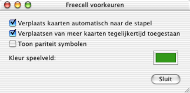

Freecell help
Freecell help
Voorkeuren
Er zijn drie opties beschikbaar in de voorkeuren van Freecell, die u het spelen gemakkelijker kunnen maken.

- Verplaats kaarten automatisch naar de stapel
- Als u deze optie aanzet, zullen kaarten die niet langer nodig in het spel zijn, weggelegd werden op de stapels, als ze daar 'aan de beurt zijn'. Azen worden altijd weggelegd, andere kaarten komen daar terecht als ze later niet meer nodig kunnen zijn in het spel.
- Verplaatsen van meer dan een kaart tegelijkertijd toegestaan
- Met deze optie kunt u meer kaarten tegelijkertijd van kolom naar kolom verplaatsen, met slechts 2 klikken. U kunt dit ook kaart voor kaart doen, maar dit bespaart een hoop werk.
- Toon pariteit symbolen
- Hiermee wordt getoond welke kaarten bij elkaar horen. Elke kaart krijgt een blauwe cirkel of een oranje vierkant in de rechter bovenhoek. Een kaart met een blauwe cirkel past op een kaart met een blauwe cirkel, zo ook voor het oranje vierkant.